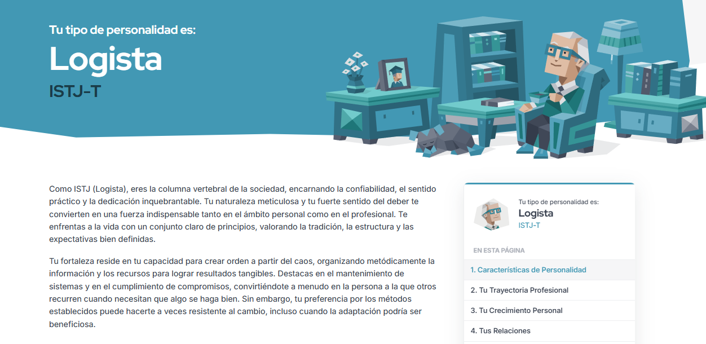
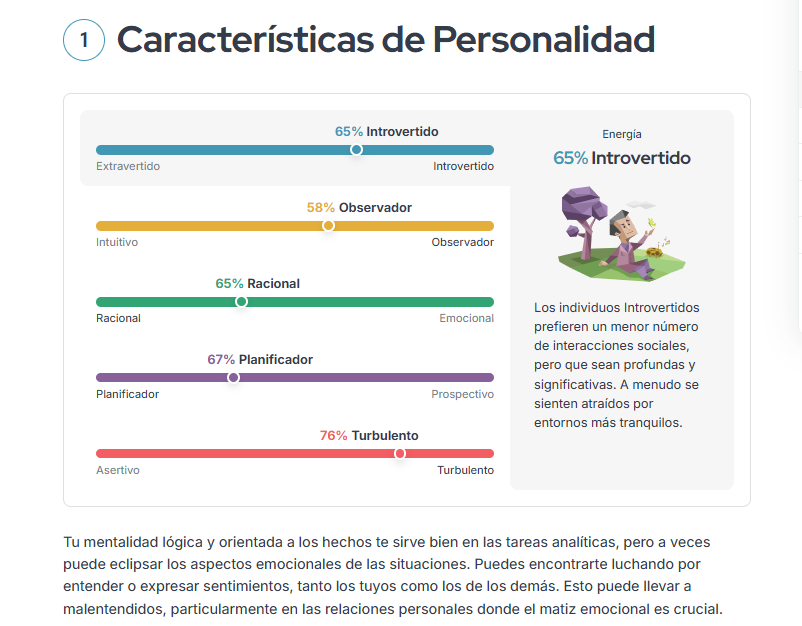

Test
Se realizó el test y se obtuvo el resultado "Logista" o "ISTJ-T". Se detallan los resultados precisos:
 Resultado general  Resultados específicosPersonalmente, coincido bastante con los resultados obtenidos. Creo que sí soy una persona introvertida, creo que si bien disfruto estar con amigos y demás, sí recargo mis energias estando solo un tiempo. Además, sí considero que me inclino más hacia "Observación" ya que prefiero la información concreta frente a otras ideas más abstractas. También considero que soy racional, puesto que siempre pienso las cosas lógicamente y no me baso en las emociones de ninguna manera. Adicionalmente, coincido con "Planificador", prefiero ser más organizado y planificar las cosas con tiempo, sin embargo, esto no es en todas las áreas de mi vida, pero sí en la gran mayoría. Con respecto a la última, "Turbulento", creo que estoy de acuerdo. Tiendo a ser una persona muy autocrítica (demasiado) y muy sensible al estrés.
Fortalezas
En la página del test se mencionaban algunas fortalezas de la personalidad que me tocó. Estas fueron:
- Prioridades Claras
- Fiabilidad Constante
- Preparación
- Perseverancia Paciente
- Compromiso con la Integridad
- Solución de Problemas Realista
Debilidades
Además, naturalmente, se mencionaron también las debilidades:
- Resistente al Cambio
- Evitar el Trabajo en Equipo
- Reticencia a la Promoción Personal
- Desprecio de Teorías
- Rígido Seguidor de Reglas
- Dificultad para Delegar Tareas